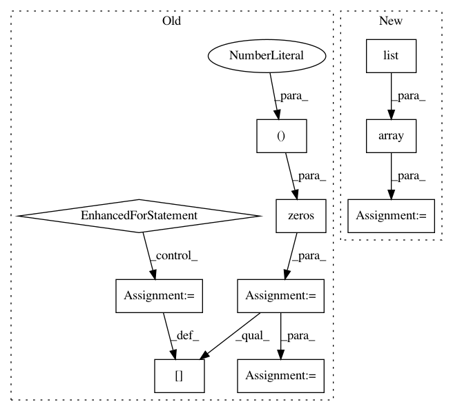

d067fe9dc7d264ce61effcb3d309b613a8df4484,test/test_pipeline/test_classification.py,SimpleClassificationPipelineTest,test_predict_proba_batched_sparse,#SimpleClassificationPipelineTest#,734
Before Change
cls = SimpleClassificationPipeline(config)
X_train, Y_train, X_test, Y_test = get_dataset(dataset="digits",
make_sparse=True)
Y_train_ = np.zeros((Y_train.shape[0], 10))
for i, y in enumerate(Y_train):
Y_train_[i][y] = 1
Y_train = Y_train_
cls.fit(X_train, Y_train)
X_test_ = X_test.copy()
prediction_ = cls.predict_proba(X_test_)
cls_predict = mock.Mock(wraps=cls.pipeline_.steps[-1][1])
After Change
cls = SimpleClassificationPipeline(config)
X_train, Y_train, X_test, Y_test = get_dataset(dataset="digits",
make_sparse=True)
Y_train = np.array(list([(list([1 if i != y else 0 for i in range(10)]))
for y in Y_train]))
cls.fit(X_train, Y_train)
X_test_ = X_test.copy()
prediction_ = cls.predict_proba(X_test_)
cls_predict = mock.Mock(wraps=cls.pipeline_.steps[-1][1])
In pattern: SUPERPATTERN
Frequency: 3
Non-data size: 10
Instances
Project Name: automl/auto-sklearn
Commit Name: d067fe9dc7d264ce61effcb3d309b613a8df4484
Time: 2016-05-02
Author: feurerm@informatik.uni-freiburg.de
File Name: test/test_pipeline/test_classification.py
Class Name: SimpleClassificationPipelineTest
Method Name: test_predict_proba_batched_sparse
Project Name: automl/auto-sklearn
Commit Name: d067fe9dc7d264ce61effcb3d309b613a8df4484
Time: 2016-05-02
Author: feurerm@informatik.uni-freiburg.de
File Name: test/test_pipeline/test_classification.py
Class Name: SimpleClassificationPipelineTest
Method Name: test_predict_proba_batched
Project Name: shubhomoydas/ad_examples
Commit Name: 562508c5edf9988078f3ca4300e1d6be569a4b8f
Time: 2018-04-01
Author: smd.shubhomoydas@gmail.com
File Name: python/timeseries/timeseries_customRNN.py
Class Name: TsRNNCustom
Method Name: predict